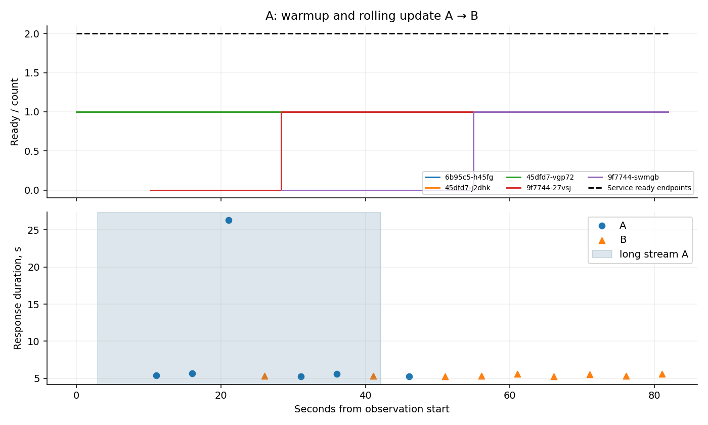
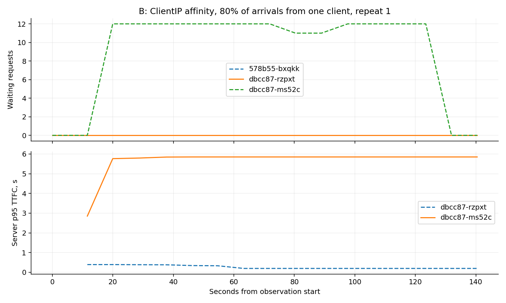
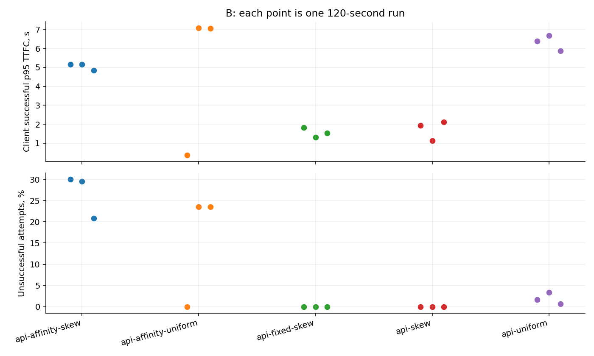
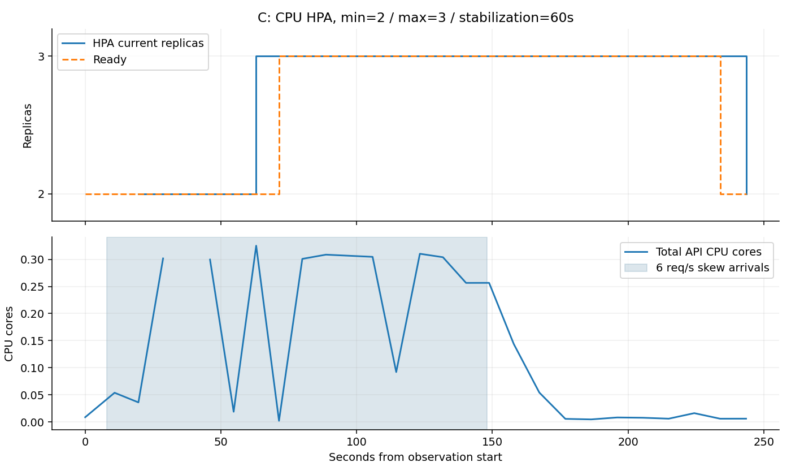

Kubernetes под нагрузкой
CPU-имитатор сервиса поддержки. Статус опытов: A завершён, B завершён, C завершён. Обновлено: 2026-11-15T21:09:53+00:00.
Запуск, ограничения и удаление стенда · Машиночитаемый итог · Индекс сырых журналов запросов
Прогрев, обновление и откат
Гипотеза. Готовность HTTP раньше завершения прогрева приводит к 503. Исходный дефект: brokenProbes=true. Исправление: startup/readiness проверяют прогретый backend, liveness проверяет живой HTTP. Прогрев 20 секунд, timeout probes 2 секунды.
Получено 503 в исходном / исправленном опыте: {'A-probes-broken': 30, 'A-probes-fixed': 0}. Полные исходные запросы и повтор, соответствующие timeline и server.log сохранены рядом.
RollingUpdate использует maxUnavailable=0 и maxSurge=1. Перед заменой A запущен длинный поток. preStop снимает готовность, но продолжает обслуживать остаточный трафик до распространения EndpointSlice. Затем Uvicorn завершает активные ответы. Grace period 60 секунд, ожидание Uvicorn 45 секунд.
B-bad намеренно не проходит прогрев. Её нельзя включать в рабочие endpoints. После управляемого отката фактические ответы должны сообщать A. Отдельный SIGKILL проверяет обрыв потока и восстановление; нулевые ошибки при SIGKILL не заявляются.
Артефакт доставляется через ConfigMap, SHA256 и model_id проверяются при загрузке. История передаётся в запросе; после замены Pod продолжается тот же диалог, кеш начинается заново.
Привязка к Pod и горячая реплика
Гипотеза. При 80% запросов от одного IP ClientIP перегружает одну реплику, хотя у другой остаётся ёмкость. Исправление: Service без sessionAffinity, распределение новых TCP-соединений. Состояние диалога не зависит от выбранной реплики.
Сравниваются одни и те же два backend: concurrency=1, queue=12, LRU=8. Hit/miss: 100000/900000 PBKDF2-итераций, каждая часть 50000 итераций и 0.08 секунды паузы. Четыре клиента с разными IP, keep-alive выключен. Все сценарии имеют одинаковое open-loop расписание для сравниваемых политик, 4 запроса/с, 120 секунд, три повтора. Кеш в начале каждого прогона холодный.
Случайное распределение обычного Service и размещение ClientIP могут менять перекос между повторами. Все полученные прогоны сохраняются, включая случаи без ожидаемого эффекта. Ни один результат имитатора не доказывает выигрыш на настоящем inference engine.
Среднее трёх успешных p95 TTFC: ClientIP 5.041 s, без привязки 1.556 s. Неуспех по всем попыткам: 26.8% и 0.0%. Исправление снизило средний p95 без роста доли неуспеха. Каждый p95 относится к своему прогону; это не объединённый p95 всей серии. Локальность кеша при случайном распределении ухудшается, но очередь может стоить дороже пересчёта.
Контрпример. В ClientIP/uniform, повтор 1 перекос не возник: по 240 запросов на Pod, два клиентских IP на каждую реплику, 480/480 завершений и p95 TTFC 0.375 s. В двух остальных uniform-повторах распределение привязок оказалось хуже. Таким образом, ClientIP не гарантирует перегрузку при равномерных клиентах. При 80% трафика через один IP перекос был во всех трёх ClientIP-повторах. Обычный Service в skew-повторе 1 распределил запросы 236/244: новые TCP-соединения одного IP могли попадать на разные Pod. Трасса сохраняет client и pod для каждого запроса.
| Прогон | Успех / попытки | p50 TTFC, s | p95 TTFC, s | Неуспех |
|---|---|---|---|---|
| A-bad-release | 9/9 | 1.738 | 2.204 | 0.0% |
| A-forced | 0/1 | нет данных | нет данных | 100.0% |
| A-forced-recovery | 22/22 | 1.470 | 4.168 | 0.0% |
| A-probes-broken | 80/110 | 0.333 | 0.621 | 27.3% |
| A-probes-fixed | 110/110 | 0.320 | 0.564 | 0.0% |
| A-rollout | 15/15 | 1.510 | 8.086 | 0.0% |
| B-api-affinity-skew-1 | 336/480 | 4.826 | 5.146 | 30.0% |
| B-api-affinity-skew-2 | 338/480 | 4.827 | 5.148 | 29.6% |
| B-api-affinity-skew-3 | 380/480 | 4.588 | 4.829 | 20.8% |
| B-api-affinity-uniform-1 | 480/480 | 0.112 | 0.375 | 0.0% |
| B-api-affinity-uniform-2 | 367/480 | 5.298 | 7.082 | 23.5% |
| B-api-affinity-uniform-3 | 367/480 | 5.297 | 7.062 | 23.5% |
| B-api-fixed-skew-1 | 480/480 | 0.537 | 1.828 | 0.0% |
| B-api-fixed-skew-2 | 480/480 | 0.428 | 1.316 | 0.0% |
| B-api-fixed-skew-3 | 480/480 | 0.438 | 1.524 | 0.0% |
| B-api-skew-1 | 480/480 | 0.508 | 1.933 | 0.0% |
| B-api-skew-2 | 480/480 | 0.366 | 1.122 | 0.0% |
| B-api-skew-3 | 480/480 | 0.593 | 2.116 | 0.0% |
| B-api-uniform-1 | 472/480 | 3.697 | 6.382 | 1.7% |
| B-api-uniform-2 | 464/480 | 3.826 | 6.661 | 3.3% |
| B-api-uniform-3 | 477/480 | 2.228 | 5.861 | 0.6% |
| C-alert-load | 362/1710 | 4.712 | 5.219 | 78.8% |
| C-alert-recovery | 75/75 | 0.315 | 0.351 | 0.0% |
| C-hpa-load | 542/840 | 4.548 | 4.736 | 35.5% |
HPA, мониторинг и измерения
Гипотеза. Вычислительная нагрузка поднимет среднюю загрузку относительно CPU requests выше 70%, HPA увеличит число реплик с 2 до 3. После снятия нагрузки и окна стабилизации 60 секунд число вернётся к 2. ClientIP не перераспределяет существующую горячую привязку на новый Pod.
Три Ready-реплики впервые наблюдались через 63.4 s после начала подачи нагрузки. Возврат к двум репликам наблюдался через 90.9 s после завершения нагрузочного клиента. Это фактическое время вместе с усреднением CPU, окном стабилизации и циклом контроллера. Распределение 840 попыток HPA-опыта по Pod: {'api-676694f5dd-fbn8g': 672, 'api-676694f5dd-vtd4d': 168}. Новая ёмкость не получает горячие ClientIP-привязки автоматически; масштабирование само по себе очередь не устраняет.
Prometheus использует Pod discovery и classic Histogram. Request ID и session ID остаются в журналах; в метриках ограниченные outcome/cache result и имена Pod. Дашборд содержит TTFC, полную длительность, running/waiting, завершения/с, отказы, CPU/RAM и Ready.
Алерты: p95 TTFC > 0.8 секунды и неуспех > 5%. Для обоих нужны минимум 10 наблюдений за 30 секунд и удержание 15 секунд. Timeline сохраняет pending/firing, последующий нормальный трафик проверяет возврат в норму.
histogram_quantile(0.95,
sum by (le) (rate(inference_ttfc_seconds_bucket[1m])))Клиент считает интервалы монотонными часами. TTFC: от отправки до первой части; inter-chunk latency: интервалы между частями. Это не TTFT/TPOT: фактических токенов здесь нет. Успех требует HTTP 200, всех частей и завершающей записи done. Отказы, обрывы, тайм-ауты и транспортные ошибки учитываются раздельно, автоматических повторов нет.
В каждом B-прогоне histogram-comparison.json сопоставляет число успешных клиентских ответов и серверных наблюдений после последнего scrape. Buckets и сырой клиентский p95 имеют разную точность; серверный TTFC также не включает сеть.




Собственные проверки
Локальные тесты · Linux-тесты. Проверки Kubernetes: alerts.json, forced-failure.json, graceful-rollout.json, probes.json, replacement-dialogs.json, rollback.json.
Ревью: следует ли навсегда закреплять диалог за Pod?
При очереди A в 3 секунды и пересчёте префикса на свободной B за 0.8 секунды новый запрос выгоднее отправить на B: ожидаемый выигрыш до начала обработки 2.2 секунды при прочих равных. Кеш следует учитывать вместе с очередью, свободными слотами и стоимостью пересчёта. Постоянная привязка не имеет механизма обхода перегруженной или потерянной реплики.
Для решения нужны распределения длины входа, hit/miss и eviction, время пересчёта, running/waiting, TTFC и ошибки по репликам, стоимость передачи истории, точность оценки очереди и измерение при меняющемся трафике. Допуск нового запроса должен ограничивать очередь и бюджет ожидания: при исчерпании ёмкости вернуть явный 429 с новой попыткой, учитываемой отдельно. Свободный Pod должен означать свободную вычислительную ёмкость.
История диалога передаётся в запросе или хранится вне Pod; после потери A другой Pod восстанавливает диалог и повторно строит кеш. Уже начатый поток остаётся на своей реплике до завершения в пределах grace period. Перенаправлять его середину на B нельзя: нужны протокол возобновления, идентификаторы частей и дедупликация. При SIGKILL клиент фиксирует обрыв и решает вопрос новой попытки, не выдавая частичный ответ за завершённый.
Кейс из лекции. На 08:30, слайд 70/224 «Результаты нагрузки Google» (кадр из видео), разбирается Google Vertex AI / GKE Inference Gateway. How we cut Vertex AI latency by 35% with GKE Inference Gateway объясняет изменение весов prefix:queue:kv-utilization с 3:3:2 на 3:5:2: очередь получает больший вес, и маршрутизатор обходит горячую реплику даже при cache hit. Это поддерживает выбор свободной B вместо ожидания 3 секунды на A. В первоисточнике cache hit вырос с 35% до 70%, p95 TTFT для DeepSeek V3.1 снизился на 52%. Эти результаты относятся к системе Google с настоящими токенами. Наше исправление снимает ClientIP-привязку и проверено по TTFC CPU-имитатора; готовая cache/queue-aware политика и её веса на inference engine здесь не проверялись.

Ограничения
Один узел kind, четыре CPU, CPU-имитатор, фиксированные входы. Нет GPU/KV-cache, continuous batching, prefill/decode disaggregation и настоящих токенов. Потеря узла не исследована. Для реальной модели нужно отдельно проверить локальность кеша, доступность весов всем репликам, повторяемость версии, производительность и потоковый протокол. Без завершённых phase-файлов работа не считается полностью проверенной.